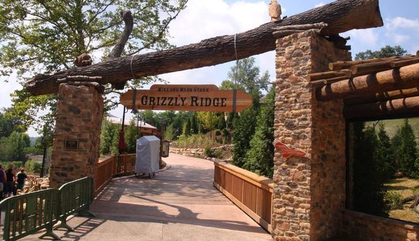

Grizzly Ridge, Akron Zoo
Akron Zoo · Photo Tour #8

Photo Tours #8, Grizzly Ridge-Akron Zoo, The $12 Million Build that is containing 3 acres opened in 2013 that replaced much of the still existing Wild Prairie section, this section is not only displaying animals in America but mainly the animals of the Past & Present that lived in Ohio.
Before you take the right to Wild Asia ( Even though I do go to Wild Asia first lol 😂 ) you would want to take the hill and see the window of Grizzly Ridge Aviary which has a upper portion of the Aviary that makes you think your in a tree house to see very cool & beautiful Ohio Native Birds like Cardinals,
Eastern Bluebirds & More, before going to the upper portion of the aviary, you will come across a group of Bald Eagles that were rescued from the wild due to their injuries, moving up the hill,
you enter a small hut that comes with a underwater viewing and move up just a little further you will see more underwater viewing areas & a slide to see the territory of the River Otters, Next to & before the main viewing area for the River Otters,
you will come across a forest meadow and it is the home of the animal that gave the area it’s name, yes i’m Mentioning Grizzly Bear Siblings Jackson & Cheyenne, moving from the bears & otters you will find a small shack which a couple birds found their way in like the Screech Owls & Bobwhite Quails,
The Next Habitats is the territory for 2 species of Canid like Common Coyote & the Critically Endangered Red Wolf, thats everything for the Ridge but to continue the North America Theme,
the zoo has 2 more enclosures in the Wild Prairie section with one containing Barn Owls & the other one has a breeding pair & family of Snowy Owls.
Louie posted this on Facebook — open the original post →